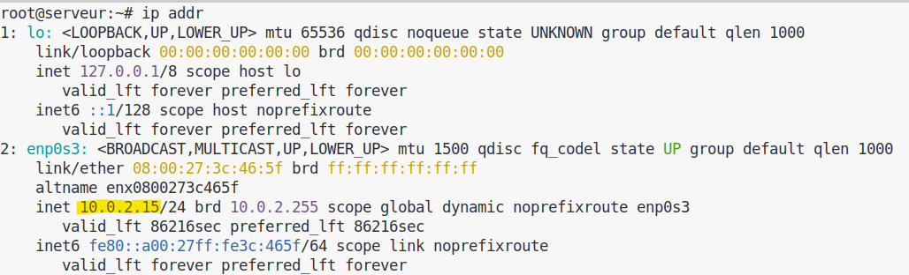
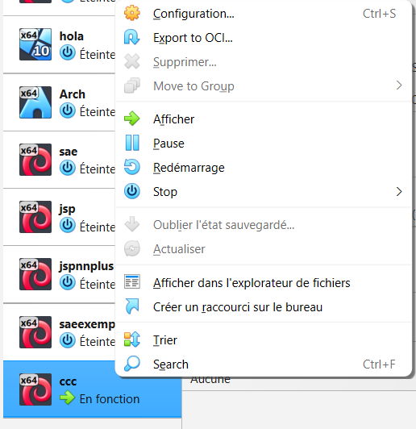
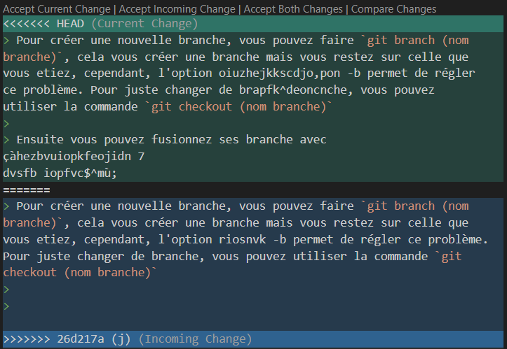

Pour ce qui est de l’installation d’une VirtualMachine ou machine
virtuelle, vous pouvez aussi vous référencer sur ce
site qui explique tout aussi bien l’installation d’une VM,
même si il utilise une version antérieure.
1.1.1 Installation d’un
Hyperviseur
Un hyperviseur
est un logiciel qui permet de faire fonctionner des Machines
Virtuelles (VM).
Mais c’est quoi une machine virtuelle ?
Une machine virtuelle est un ordinateur simulé à l’intérieur
de votre ordinateur, elle possède son propre système
d’exploitation, ses fichiers et ses paramètres.
Ici, nous allons utiliser VirtualBox, mais il en
existe d’autres comme VMware Workstation ou
VMware Player.
Il vous faut donc un hyperviseur avant d’installer
votre VM, car c’est lui qui va gérer les ressources de votre ordinateur
(RAM, processeur, disque).
Pour installer VirtualBox, allez sur ce site et
téléchargez le fichier selon votre OS (Operating
System), c’est-à-dire le système d’exploitation de votre
ordinateur (Windows, Linux ou macOS).
Nous ferons l’exemple avec Windows, mais la
procédure est quasiment identique sur les autres systèmes.
Après avoir téléchargé le fichier, ouvrez-le puis
vous devriez arriver sur cet écran.
Appuyez sur suivant, puis cochez la case
“J’accepte les termes du contrat de licence”.
Ensuite cliquez sur suivant (nous voulons installer
toutes les fonctionnalités).
Puis cliquez 2 fois sur “Oui” lorsque Windows vous
demande si vous acceptez les modifications.
Pour finir l’installation, cochez les cases que vous
souhaitez (de préférence toutes) afin de créer des raccourcis
vers VirtualBox et pouvoir le retrouver facilement.
Cliquez ensuite sur installer et attendez quelques
instants que l’installation se termine.
Puis cliquez sur terminer.
Si tout s’est bien passé, vous devriez arriver sur cette fenêtre
:
Votre installation est maintenant terminée. Nous allons maintenant
passer à la création d’une machine virtuelle.
1.1.2 Installation d’une VM
Créer une machine virtuelle est relativement simple, mais cela peut
prendre un peu de temps car certains fichiers doivent être
téléchargés.
Dans VirtualBox, cliquez sur l’onglet Machine en
haut à gauche puis sur Nouvelle.
Vous devriez arriver sur cette fenêtre :
Entrez un nom pour votre machine virtuelle dans
VM Name.
Pour le système d’exploitation (la case OS), nous
utiliserons Linux, mais VirtualBox permet aussi
d’installer d’autres systèmes comme Windows ou
BSD.
Pour la distribution (OS Distribution), nous utiliserons
Debian, et pour la version (OS Version) Debian
13 Trixie (64-bit).
Cliquez ensuite sur Finish.
Avant d’ouvrir votre VM, vous pouvez changez la configuration de
votre VM, c’est à dire la RAM
ainsi que le processeur. Pour cela il vous suffit d’aller dans l’onglet
configuration puis système, dans
carte mère vous pouvez changer la RAM et dans processeur,
le nombre de CPU qui fonctionne comme la RAM et permet d’exécuter plus
de tâches en même temps.
Dans le panneau de gauche, vous devriez maintenant voir votre
machine virtuelle apparaître avec le nom que vous lui avez
donné.
Si ce n’est pas le cas, c’est probablement qu’une étape a été mal
réalisée (sauf si vous avez déjà d’autres VM).
1.1.3 Installation de l’ISO
Nous allons maintenant installer le système d’exploitation
dans la machine virtuelle.
Pour cela, il faut télécharger un fichier ISO, qui
est une image disque contenant les fichiers nécessaires à l’installation
du système.
Téléchargez l’ISO de Debian ici puis
téléchargez le fichier .iso (environ
750 Mo).
Nous allons ensuite l’insérer dans la VM.
Cliquez sur Configuration, puis sur
Stockage.
Cliquez sur le petit disque à droite, puis
sélectionnez le fichier .iso que vous venez de
télécharger.
Appuyez ensuite sur OK en bas de la fenêtre.
1.1.4 Configuration de la VM
Nous allons maintenant lancer l’installation du système dans la
VM.
Si vous vous trompez sur une de ses étapes, sur
certaine étape vous avez Go Back, alors vous pourrez aller
à l’étape d’avant.
Cependant, sur certaines étapes vous ne pouvez
pas revenir en arrière et donc vous devrez tout
recommencer, faites bien attention et
lisez bien les consignes
Démarrez votre machine virtuelle en cliquant sur
Démarrer.
Vous devriez arriver sur cet écran :
Ici, tout se fait avec les flèches directionnelles du
clavier.
La souris n’est généralement pas utilisée pendant
l’installation.
Pour valider une option, il faut appuyer sur la touche
Entrée.
Voici les étapes à suivre :
Choix de l’installation
Ici vous pouvez choisir la méthode d’installation.
Nous allons choisir Install, qui correspond à une
installation classique.
Si, par mégarde, vous vous trompez,
éteignez votre machine en fermant
l’application
Choix de la langue et de la zone
géographique
Sélectionnez votre langue puis votre zone
géographique.
Choix du clavier
Sélectionnez la configuration de votre
clavier.
Par exemple :
Français pour un clavier
AZERTY
Anglais pour un clavier
QWERTY
Réseau et domaine
Choisissez un nom pour votre machine1.
Laissez le domaine vide2.
Choix du mot de passe root
Saisissez un mot de passe root3
puis confirmez-le.
Création d’un utilisateur
Vous devez créer un utilisateur principal pour
utiliser la machine.
Entrez :
le nom de l’utilisateur
son identifiant
son mot de passe (deux fois)
Partitionnement du disque
Pour simplifier l’installation, nous allons utiliser le
partitionnement automatique.
Choisissez :
Assisté – utiliser un disque entier
sélectionnez le disque proposé
Tout dans une seule partition (recommandé pour les débutants)
Puis sélectionnez :
Terminer le partitionnement et appliquer les changements
Attention, une seule erreur ici et votre VM ne fonctionnera jamais
!
Configuration du gestionnaire de paquets
Choisissez non, puis nous allons configurer le
miroir Debian5.
Sélectionnez votre pays (France par exemple) puis
choisissez le miroir par défaut :
deb.debian.org
Pour le mandataire (proxy), laissez ce champ
vide.
Sélection des logiciels
Nous allons installer un environnement de bureau
pour avoir une interface graphique.
Pour cocher ou décocher une case, utilisez la
barre espace, n’utilsez pas la touche
Entrée, sinon vous allez aller directement à
l’étape suivante sans faire de modification
Sélectionnez :
MATE
Serveur web
Serveur SSH
Et décochez GNOME.
Installation de GRUB
Pour la dernière étape, l’installateur vous demandera si vous voulez
installer GRUB6.
Choisissez oui, puis sélectionnez
/dev/sda.
GRUB est le programme qui permet à votre ordinateur de
démarrer le système d’exploitation installé.
1.2 Configuration matérielle dans
VirtualBox
1.2.1 Que signifie “64-bit” dans
“Debian 64-bit” ?
Dans “Debian 64-bit”, 64-bit
signifie que le système d’exploitation est conçu pour
une architecture processeur 64 bits. Le processeur peut
manipuler des registres et adresses mémoire sur 64
bits, ce qui permet de gérer plus de 4 Go de
RAM. source
1.2.2 Quelle est la configuration
réseau utilisée par défaut ?
La configuration réseau par défaut est
DHCP, ce qui signifie que l’adresse IP est
attribuée automatiquement par un serveur DHCPsource.
1.2.3 Pourquoi allouer 2048 Mo de
RAM à la VM ? Qu’est-ce qui se passerait avec seulement 512 Mo ?
1.2.3.1 Qu’est-ce que la RAM ?
Tout d’abord, qu’est ce que la RAM. La RAM
(Random Access Memory), ou mémoire vive en français, est un composant de
l’ordinateur qui permet de stocker temporairement les données
utilisées par les programmes en cours d’exécution.
Plus vous avez de RAM, plus votre ordinateur peut gérer
plusieurs tâches en même temps sans ralentir.
Contrairement au disque dur, la RAM est une mémoire
temporaire : toutes les données sont perdues lorsque
l’ordinateur est éteint.
1.2.3.2 Pourquoi allouer 2048 Mo de
RAM et que se passerait il avec seulement 512 Mo.
Maintenant que vous savez ce qu’est la RAM, on va
pouvoir vous expliquer pourquoi allouer 2048 Mo de
RAM.
Si on allouait seulement 512 Mo, la RAM serait
rapidement saturée et votre VM serait beaucoup
plus lente.
De plus, il faut savoir que la RAM que vous allouez à votre
VM est prise sur celle de votre ordinateur (source,
section 3.5.1).
Par exemple, si votre ordinateur a 8 Go de RAM et que
vous allouez 6 Go à votre VM, il ne vous restera plus
que 2 Go pour votre PC, ce qui peut le rendre
lent.
C’est pour cela que nous allouons 2048 Mo, afin que
cela n’affecte presque pas votre ordinateur tout en
permettant à la VM de fonctionner correctement.
1.2.4 Quel est le mode réseau
utilisé par défaut par VirtualBox (NAT, pont, réseau interne…) ?
Dans la configuration de base de VirtualBox, le réseau est configuré
en NAT (source, chapitre
6, section 6.3).
1.2.5 Quelle est l’adresse IP de
votre VM ? Comment l’avez-vous obtenue ?
L’adresse IP est 10.0.2.15. On l’obtient en tapant
la commande ip addr et on regarde dans la partie
enp0s3 juste après inet (source).

Il y a aussi d’autres informations tels que: * le masque qui indique
quel est la partie host et quel est est la partie réseau * l’adresse ip
de broadcast qui est une adresse spéciale qui permet de contacter tous
les appareils sur le meme réseau source *
l’adresse ip de loopback qui permet à un ordinateur de se connecter
lui-même. Nous pouvons obtenir l’adresse ip avec d’autres commandes
telles que ip route ou encore ifconfig.
Cependant, si vous faites la commande ifconfig, vous
pouvez avoir quelques problèmes notamment le fait que
ifconfig n’est pas installé comme représenté
ci-dessous.
Command 'ifconfig' not found, but can be installed with:
sudo a pt install net-tools
Cependant la solution y est aussi écrit, il peut être installé avec
la commande sudo apt install net-tools. Mais que veux dire cette commande ?
Pour ce qui est de sudo, aller voir ici,
apt est l’outil de gestion de paquets sur les distributions
Debian/Ubuntu et install net-tools installe le paquet qu’on
veut, ici net-tools.
1.2.6 Quelle est l’adresse de la
passerelle par défaut ? À quoi correspond cette adresse ?
L’adresse de la passerelle par défaut est 10.0.2.2 (on l’obtient en
faisant ip route (source)).
Elle correspond à l’adresse du routeur virtuel de VirtualBox qui permet
à la VM d’accéder au réseau extérieur.
default via 10.0.2.2 dev enp0s3 proto dhcp src 10.0.2.15 metric 100
10.0.2.0/24 dev enp0s3 proto kernel scope link src 100.2.15 metric 100
1.3 Installation OS de base
1.3.1 Qu’est-ce qu’un fichier iso
bootable ?
C’est une image disque contenant tous les fichiers d’un support (DVD,
clé USB) et incluant un secteur d’amorçage. Cela permet à l’ordinateur
de démarrer directement sur ce fichier pour lancer une installation ou
un système “Live” source.
1.3.2 Qu’est-ce que MATE ? GNOME
?
Ce sont des environnements de bureau (interfaces
graphiques). GNOME est l’interface moderne et riche par
défaut sur Debian, tandis que MATE est une interface
plus traditionnelle, légère et consommant moins de ressources. source
1.3.3 Qu’est-ce qu’un serveur
mandataire ?
Aussi appelé Proxy, c’est un serveur qui agit comme
intermédiaire entre un client (votre VM) et Internet. Il est souvent
utilisé en entreprise pour filtrer le contenu ou améliorer les
performances via un cache. source
1.3.4 Qu’est-ce qu’un serveur web
?
C’est un logiciel (comme Apache ou
Nginx) qui répond à des requêtes HTTP/HTTPS pour
diffuser des pages web ou des données à des clients (navigateurs) source.
1.3.5 Quel logiciel de serveur SSH
a été installé ? Comment vérifier qu’il est bien démarré ?
Le logiciel installé est OpenSSH Server. On vérifie
son état avec la commande : systemctl status ssh.
S’il est bien démarré, vous devriez avoir au début de la 3ème ligne
comme ci-dessous source
Active: active (running) since...
1.3.6 Testez une connexion SSH
depuis votre machine hôte vers votre VM. Quelle commande utilisez-vous ?
Quel problème rencontrez-vous et pourquoi ?
Commande : ssh user@10.0.2.15. Problème
: La connexion échoue (Time out ou Connection refused) au bout
d’un long moment (très long).
ssh user@10.0.2.15
ssh: connect to host 10.0.2.15 port 22: Connection timed out
Pourquoi : En mode NAT, la VM est
isolée derrière le routeur virtuel de VirtualBox. L’hôte ne peut pas
initier une connexion entrante vers l’IP privée de la VM sans une règle
de “Redirection de ports” (Port Forwarding) source.
1.4 Sudo
1.4.1 Comment peut-on savoir à
quels groupes appartient l’utilisateur user ?
On utilise la commande groups user ou simplement
id. Vous pouvez aussi ajouter un utilisateur au groupe
sudo en faisant la commande
sudo usermod -aG sudo (nom de l'utilisateur)source
1.4.2 Quelle est la différence
entre su et sudo ?
su (Substitute User) : Permet de devenir un autre
utilisateur (souvent root). Il nécessite de connaître le mot de passe du
compte cible (root).
sudo (SuperUser Do) : Permet d’exécuter une
commande avec les droits root (comme par exemple pour la commande
apt, c’est obligatoire d’avoir les droits root) en
utilisant son propre mot de passe. C’est plus sécurisé
car cela évite de partager le mot de passe root et permet une gestion
fine des permissions. source
1.5 Suppléments invités
1.5.1 Quelle est la version du
noyau Linux utilisé par votre VM ?
La version du noyau Linux utilisé est 6.12.69. Elle
s’obtient en faisant la commande uname -r. source
1.5.2 À quoi servent les
suppléments invités ? Donner 2 principales raisons de les
installer.
Les suppléments invités ajoutent plusieurs fonctionnalités utiles à
l’utilisateur. La première raison principale est que l’écran se
redimensionne automatiquement. La deuxième est que la souris passe de la
VM à l’hôte sans devoir appuyer sur un bouton. source
1.5.3 À quoi sert la commande mount
(dans notre cas de figure et dans le cas général)
Dans le cas général : La commande mount
permet d’attacher un système de fichiers (comme une partition disque,
une clé USB ou une image ISO) à un répertoire dans la hiérarchie des
fichiers, rendant son contenu accessible. Par exemple,
mount /dev/sdb1 /mnt attache la partition /dev/sdb1 au
répertoire /mnt.
Dans notre cas de figure : Lors de l’installation
des Suppléments Invités (Guest Additions) de VirtualBox,
mount est utilisé pour monter l’image ISO des Guest
Additions (généralement /dev/cdrom ou un fichier .iso) sur un répertoire
comme /mnt, afin d’accéder au script d’installation contenu dans l’ISO.
source
1.6 À propos de la distribution
Debian
1.6.1 Qu’est-ce que le Projet
Debian ? D’où vient le nom Debian ?
Le “projet Debian” est une association d’individus qui ont pour cause
commune de créer un système d’exploitation libre. Le nom Debian tire son
origine des prénoms du créateur de Debian, Ian Murdock, et de son
épouse, Debra source.
1.6.2 Quelle est la durée de prise
en charge pour les trois types de support de Debian : durée minimale,
support long terme (LTS) et support long terme étendu (ELTS) ?
La durée minimale est de 3 ans, chaque version a une prise en charge
totale pour ce qui est de la sécurité et de la correction de bugs source
La durée en support long terme (LTS) est de 5 ans, certaines
versions ont une prise en charge de 5 ans pour ce qui est de la sécurité
source
La durée en support long terme étendue est de 10 ans, certaines
versions ont une prise en charge de 10 ans pour ce qui est de la
sécurité source
1.6.3 Pendant combien de temps les
mises à jour de sécurité seront-elles fournies ?
Les mises à jour de sécurité sont fournies pendant toute la durée de
prise en charge de la version Debian concernée : - Pour les versions
standard : environ 3 ans. - Pour les versions LTS (Long Term Support) :
5 ans. - Pour les versions ELTS (Extended Long Term Support) : 10
ans.
1.6.4 Combien de versions au
minimum sont activement maintenues par Debian ? Donnez leur nom
générique
Il y a au minimum 3 versions qui sont activement maintenues par
Debian, il y a la distribution “stables” qui contient
la dernière distribution officiellement sortie de Debian, la
distribution “testing” qui contient des paquets qui
sont en test pour savoir si ils sont acceptés dans la distribution
stable ou qui ont des bugs qui font qu’ils ne peuvent aller dans la
distribution stable, puis il y a la distribution
“unstable” qui permet de développer des paquets, et
peuvent subir des changements majeurs qui peuvent occasionner un
comportement très instable du système source
1.6.5 D’où viennent les noms de
code des distributions ?
Les noms de code des distributions proviennent des personnages des
films « Toy Story », Pourquoi ?
“La décision d’utiliser des noms provenant de Toy Story a été prise par
Bruce Perens qui était, à l’époque, responsable du projet Debian et
travaillait chez Pixar, la société qui a produit les films.”source
1.6.6 L’un des atouts de Debian fut
le nombre d’architectures (=processeurs) officiellement prises en
charge. Combien et lesquelles sont prises en charge par la version
Trixie ?
Il y a au total 7 architectures qui sont prises en charge (source): - PC 64 bits
(amd64) - ARM PC 64 bits (arm64) - ARM EABI (armel) - ARMv7 (ARM avec
unité de calcul flottant, armhf) - PowerPC 64 bits petit-boutiste
(ppc64el) - RISC-V 64-bits petit-boutiste (riscv64) - IBM System z
(s390x)
La version de cette distribution est la version 15source
1.7 Ajustement de la
pré-configuration
1.7.1 Configuration d’une VM
automatiquement
Pour configurer une VM automatiquement, il y a plusieurs étapes à
suivre.
Nous allons vous expliquer les étapes à suivre et les erreurs que
nous avons faites afin que tout se passe pour le mieux lors de votre
configuration.
Récupérer les fichiers
La première étape consiste à récupérer les fichiers nécessaires à la
configuration.
Pour cela, il vous suffit de télécharger ce dossier
Configuration des fichiers
Ensuite vous devrez configurer vos fichiers. Pour cela il vous suffit
de 2 choses:
Entrer une commande dans le terminal
Pour ce faire vous devrez ouvrir un terminal et vous placer dans le
répertoire où se situe votre .viso.
Sachant que le nom de votre fichier est
autoinstall_iut_salles_TP, vous devrez vous placer dans ce
dossier.
Vous pouvez dans un explorateur de fichiers aller directement dans ce
dossier puis faire clique droit en dessous de vos
fichiers puis Ouvrir dans le Terminal
Ensuite, si vous êtes sur Linux, vous devrez taper cette commande
sed -i -E "s/(--iprt-iso-maker-file-marker-bourne-sh).*$/\1=$(cat /proc/sys/kernel/random/uuid)/" S203-Debian13.viso
Elle remplace la chaîne @@UUID@@ par un
identifiant unique universel.
Mais si vous êtes sur Windows, vous devrez
adapter cette commande.
Modifier le chemin des fichiers utilisé
Effectivement, vos fichiers ne se trouve pas au même emplacement que
nous, vous devrez donc modifier le chemin vers le .iso
et vers les Guest Additions.
Pour ce faire, ouvrez le fichier .viso dans un bloc
note ou autre pour pouvoir le modifier.
Ensuite, après le --import-iso=, entrer
l’emplacement de votre fichier .iso et après le
--push-iso= celui des Guest Additions.
Les Guest Additions se trouvent là où votre application est
installée, par exemple sous Windows c’est très souvent dans
C:\Program Files\Oracle\VirtualBox
Pour connaître le chemin de votre fichier, vous
pouvez faire un clique droit et appuyer sur
Propriété.
Cela va vous ouvrir une fenêtre avec votre fichier et l’emplacement de
votre fichier. Vous avez juste a copier l’emplacement de votre fichier
puis à la fin ajouter un ou un / selon votre OS et a mettre le nom du
fichier puis son type (.iso par exemple)
Placement des fichiers
Dans cette partie, vous devrez placer vos fichiers. Pour cela vous
devrez décompresser vos fichiers dans le répertoire de votre machine
virtuelle.
Il y a une méthode très simple pour cela, vous pouvez décompresser
dans vos téléchargements puis ensuite vous faites clique droit sur votre
machine virtuelle. Ceci apparaîtra

Sélectionner “Afficher dans l’explorateur de
fichiers”, le dossier de votre machine virtuelle s’ouvrira.
Vous pouvez ensuite faire un copier coller de votre dossier.
Lancement de la VM
Maintenant que tout est prêt, vous pouvez mettre le .iso comme nous
avons fait dans la première partie.
1.7.2 Quelle est la différence
entre d-i pkgsel/include et tasksel tasksel/first ?
d-i pkgsel/include : Permet d’installer des paquets
individuels spécifiques en les listant après la directive (ex. :
d-i pkgsel/include string sudo git).
tasksel tasksel/first : Permet de sélectionner des
“tâches” (groupes de paquets) pour des environnements complets, comme
des bureaux ou des serveurs (ex. :
tasksel tasksel/first multiselect standard ssh-server). source
1.7.3 Le preseed contient-il des
informations sensibles (mots de passe) ? Comment devrait-on protéger ce
fichier en production ?
Oui, les fichiers preseed peuvent contenir des informations sensibles
comme des mots de passe (root, utilisateurs, clés de chiffrement). Cela
est nécessaire pour l’automatisation.
En production, protégez-les par : - Chiffrement
(GPG). - Contrôle d’accès limité. - Utilisation
temporaire : supprimer après installation. - Hachage
des mots de passe (avec mkpasswd). source
1.7.4 Modification de votre
configuration
Dans cette partie, nous allons ajouter certaine chose pour que notre
installation automatique soit plus compléte. source.
1.7.4.1 Ajouter le droit sudo à
l’utilisateur standard
Afin d’ajouter les droit sudo, il vous faut ajouter
à la fin de cette ligne
d-i passwd/user-default-groups string audio cdrom videoroot.
Ceci redirigera les utilisateurs standard vers le group root. Ils
auront donc les droit root.
1.7.4.2 Installer l’environnement
MATE
Pour installer l’environnement MATE, ajouter
mate-desktopaprès la ligne de commande
tasksel tasksel/first multiselect standard ssh-server.
Cela vous installera l’environnement MATE.
1.7.4.3 Ajouter les paquets sudo,
git, sqlite3, curl, bash-completion et fastfetch
Pour cela il vous suffit d’ajouter entre la section Apt
setup et Installation méta-paquets la ligne de
commande
d-i pkgsel/include string sudo git sqlite3 curl bash-completion fastfetch.
Cela va vous installer tous les paquets.
2 Les outils d’éditions
Dans cette 2eme partie, nous allons tout d’abord vous présenter
Markdown et Pandoc puis vous présenter
les bases de ses outils et leurs fonctionnalités.
2.1 Présentation des outils
2.1.1 Qu’est ce que le
“Markdown”
Le Markdown est un langage de balisage léger qui
permet de mettre en forme du texte de manière simple et
lisible, sans avoir besoin de logiciels compliqués. Il permet par
exemple de créer des titres, listes, liens, images, ou du texte en
gras/italique simplement avec des caractères spéciaux (source).
Markdown est très populaire car il est facile à
apprendre, rapide à écrire, et peut être
converti en HTML ou PDF très facilement. A titre
informatif, notre projet est écrit en Markdown.
2.1.2 Qu’est ce que pandoc ?
Vous devez probablement vous demander comment on peut convertir un
fichier .md (Markdown) en HTML ou PDF. C’est là tout
l’intérêt de Pandoc : il s’agit d’un outil de
conversion de documents universel, capable de
transformer des fichiers entre de nombreux formats
différents, comme Markdown, HTML, PDF DOCX, et bien d’autres encore.
Pandoc peut également gérer des références
bibliographiques, des tableaux, des images et même des présentations, ce
qui en fait un outil extrêmement puissant pour
automatiser et standardiser la production de documents.
2.2 Tout savoir sur pandoc et
markdown
2.2.1 Utilisation du markdown
Son utilisation est extremement simple, dans cette
partie, nous allons vous donnez le minimum requis afin de pouvoir
utilisé markdown et vous fournir la documentation si
vous voulez en savoir plus, car bien évidemment, il y a trop de choses
pour que nous vous expliquons tout, et nous meme ne connaissons pas
tous. Dans ce que je vais vous présenter, je vais vous expliquer à quoi
cela sert et un exemple de ce que cela donne en vous montrant ce que
j’ai mis pour avoir ce rendu.
2.2.1.1 Les titres
#
Il y a différent niveau de titres, de 1 à 6:
2.2.2 Titre de niveau 3
2.2.2.1 Titre de niveau 4
2.2.2.1.1 Titre de niveau 5
### Titre de niveau 3
#### Titre de niveau 4
##### Titre de niveau 5
Les titres sont les éléments les plus importants pour organiser la
structure d’un document. Pour créer un titre, ajoutez un dièse (#) avant
un mot ou une phrase. Le nombre de dièses indique le niveau du titre,
les titres pouvant aller jusqu’à 6.
Ici nous en avons fait l’exemples avec les titres de niveaux 3, 4 et
5. Les numéros a coté sont dues à une option de pandoc.
Cependant, il est important de respecter un ordre logique : il faut
toujours commencer par un titre de niveau 1, puis de niveau 2. Il n’est
pas possible de passer directement à un titre de niveau 3 sans respecter
cette hiérarchie.
2.2.2.2 Mettre du text en gras
et/ou italique *
Vous pouvez mettre du text en gras, en italique ou les 2 en utilisant
des asthérisques (*), il vous en suffit de un de chaque côté de la
phrase que vous voulez mettre en italique, de deux pour le mettre en
gras et de 3 pour le mettre en gras et en italique.
Text en italique Text en gras Text en gras et en italique
*Text en italique*
**Text en gras**
***Text en grras et en italique***
2.2.2.3 Mettre des ciations
>
Les citaions servent à mettre en
avant un texte particulier en le distinguant
du reste du contenu.
Vous les distinguerai avec les barre sur la gauche.
Dans notre rapport nous mettons trés régulièrement des ciations, nous
trouvons que cela rend un meilleur visuelle.
Nous avons aussi remarqué que même si sur la preview cela marche, si
vous ne mettez pas d’espace entre >et votre texte,
lorsque vous allez modifier le format avec pandoc, les
>s’afficheront et le texte ne sera pas mis en avant.
Ceci est une citations
> Ceci est une citations
2.2.2.4 Insérer une image et une
source
Pour mettre une source, il vous suffit de mettre entre [] le texte
qui sera cliquable puis mettre l’URL entre ()
[Ceci est une source vers google](https://www.google.com/?hl=fr)
Pour insérer une image, il vous suffit de faire la même chose mais en
ajoutant un point d’explamation devant (!) ce qui sera entre [] sera le
texte altérnatif et ce qui sera entre () sera la où mène votre
image.
Donc si vous etes dans un dossier A, que votre fichier .md ou vous
écrivez s’y trouve et que vos image sont dans un sous dossiers B. Alors
ce que vous devez mettre entre () est
B/(nom de votre image)
Ceci est important car sinon, votre image ne s’affichera pas.
N’oubliez pas aussi que si vous envoyez votre fichier .md à une personne
sans aussi envoyez les images avec la bonne hiérarche de fichier, il ne
verra pas vos image.
2.2.2.5 Passer à la ligne/une
ligne
Pour passer à la ligne, il vous suffit de mettre 2 espaces à la fin
de la ligne d’avant.
Pour passer une ligne il n’y a pas d’autre chose à faire que de
sauter une ligne, cepandant vous ne pouvez pas passer plus d’une ligne.
Markdown considère plusieurs sauts de ligne comme une
seule
2.2.2.6 Les listes/sous-listes
Ils existent 2 type de listes, les listes numérotés et les listes
avec des •
Pour les listes numérotés, ils vous suffit de faire 1., cependant
vous n’etes pas obliger de suivre l’ordre, vous pouvez à chaque fois
mettre 1., cela vous numérotera automatiquement.
1.
1.
1.
Cependant faites attention à l’indentation, si vous mettez entre vos
listes des citations, vous devez décaler le texte vers la droite
(tabulation), sinon la liste ne marchera pas et ce ne sera pas une
liste.
Il existe aussi des liste avec des •
Pour ce faire, il y a 3 façon de faire, soit avec des +,
soit avec des - ou avec des *. Cependant il
est bon de savoir que entre chacun des différent moyens de faire, il y
aura un plus grands espaces.
+
+
*
*
-
-
Pour les sous-listes, ils vous suffit juste de décaler votre
sous-liste. Voici un exempple
Titre 1
Sous titre 1
Sous titre 2
Sous titre 3
Titre 2
Sous titre 1
Sous titre 2
Sous titre 3
- Titre 1
1. Sous titre 1
1. Sous titre 2
1. Sous titre 3
- Titre 2
1. Sous titre 1
1. Sous titre 2
1. Sous titre 3
2.2.2.7 Les blocs de code
Vous pouvez aussi ajouter des blocs de 2 manières différentes
Soit avec ` qui permet de mettre du code sur une ligne, en voici un
exemple ;
`Voici du code`
Soit avec ``` qui permet de mettre du code sur plusieurs ligne. Vous
pouvez aussi mettre après vos 3 premier backtick le nom du language que
vous utlisez. Cela va mettre le code en couleur selon le language que
vous utilisez.
```markdown
Code
Sur
Plurieurs
Ligne
```
2.2.2.8 Les métadonnées
Il est possible d’ajouter des métadonnées en utilisant des accolades
{} juste après cet élément.
Par exemple, après une image, un titre ou un bloc de code, on peut
spécifier des attributs comme la taille, l’identifiant, la classe CSS ou
un style particulier.
Pour une image, on peut ainsi écrire
{ width=50% }pour indiquer
que l’image doit occuper 50 % de la largeur du document.
On peut également donner un id pour référencer l’élément dans la
table des matières ou dans un lien {#mon-id}, ou une classe
CSS pour appliquer un style {.ma-classe}.
Ces métadonnées permettent de contrôler le rendu précis de chaque
élément.
2.2.3 Utilisation de pandoc
Avant toute chose, n’oubliez pas d’installer pandoc, pour cela, vous
pouvez aller voir dans le readme.
2.2.3.1 Transformer un fichier .md
en .html
Pour transformer un fichier .md en en un autre fichier, il vous
suffit d’ouvrir un terminal Linux et de faire la
commande
pandoc (nom du fichier) -o (nom du fichier qui va etre créer)
Le -o ou --output permet de transformer un
fichier en un autre.
Avec la commande --list-input-formats vous pouvez voir
les formats d’entrer que pandoc accepte et avec
--list-output-formats ceux de sorti.
Ceci est la base de pandoc, cependant il existe de nombreuses options
qui font la particularité de pandoc, nous allons vous en présenter
quelques unes, mais vous pouvez aussi consulter la documentaion pandoc
sur des sites ou sur le manuelle en fessant la commande
man pandocdepuis un teminal
2.2.3.2 Les options
Comme dit precédemment, nous allons vous présenter les options les
plus basiques.
Tout ce qu’on va vous dire ici est spécifiié dans le manuelle
de pandoc et pour plus d’information, vous pouvez aller y faire
un tour.
L’option --toc ou permet de faire une table des matières
selon vos titres. D’autres options permettent d’avoir un meilleur
visuelle pour votre table des matières comme -N qui vous
permet d’avoir des numéros a côté de vos tites et de votre liste des
matières ou de mieux gérer vos titres comme avec
--toc-depth=NUMBER qui vous permet de faire la table des
matières selon le niveau de titre (NUMBER) que vous
voulez.
L’option -s ou --standalone permet de
générer un document complet. Sans cette option, pandoc va juste vous
générer unn fragement et donc non un vrai fichier de
votre format. Cette option est cependant mise sur certain fichier
automatiquement comme avec PDF et d’autres enocre.
2.3 Documentations
Ici nous allons vous donner quelques liens afin de pourvoir mieux
vous renseigner et/ou approfondir vos connaissance. A savoir qu’il
existe de nombreuses documentations, alors ici nous allons mettre, selon
nous, les plus utiles.
Ici
se trouve le site qui vous montre comment fonctionne
Mardown, il comporte une documentation complète de
markdown, facile d’utilisation.
Vous pouvez aussi apprendre Markdown grace a des tutoriels
interactifs comme celuis de CommonMark ou
(https://www.markdowntutorial.com/fr/)[https://www.markdowntutorial.com/fr/]
3 Applications clientes
3.1 Création d’un dépot git
Local
Ici, nous allons vous faire une démonstration et vous expliquez
comment faire un dépot git Local. C’est à dire seulement sur votre
ordinateur, et non sur un dépôt Git. Seul vous y aura accés depuis votre
ordinateur.
Après nous ferons l’exemple avec un Git distant qui permet de
partager votre code avec d’autres personnes.
3.1.1 Compte utilisateur
Pour commencer, vous devez créer un compte. Pour
cela il vous suffit de faire ses 3 commandes dans l’ordre en remplaçant
votre Prénom, votre nom et votre addresse mail.
Les 2 premières lignes de commandes servent a créer votre compte. La
dernière sert à nommé votre branche
principale.
3.1.2 Création d’un dépot git et
gestion de la zone de staging
Pour créer un dépot git, mettez vous dans le dossier dans lequel vous
voulez créer votre dépot git et entrez la commande
git init. Vous pouvez aussi aller voir [ici]
(#créez-un-nouveau-dépôt-git-local-quelle-commande-utilisez-vous–que-se-passe-t-il-)
pour avoir plus d’explication.
Ensuite pour la gestion de la zone de staging (l’endroit où sont mis
vos fichier et dossiers avant d’etre commit, seul vous pouvez voir ses
fichiers) des fichiers, ou des dossiers, vous pouvez soit faire
git add . qui va vous ajoutez tout vos fichiers
depuis le répertoire ou vous etes,
Le répertoire courant, c’est que si vous avez créer un dépot git dans
un dossier qu’on va appelé A, que dans celuis-ci vous ajoutez un fichier
A1 et un dossier B dont vous y incluez un fichier B2, voici donc la
représentation :
A
A1
B
B1
Si vous faites un git add . dans le dossier B, ceci va
uniquement ajouter le fichier B1 et non le reste.
Vous pouvez aussi ajouter un seul fichier en fessant
git add (votre fichier).
Vous pouvez aussi retirer des fichiers et des dossiers mais cela est
un petit peu complexe. Ne vous inquituetez pas, nous allons vous
expliquer.
Vous pouvez faire git rm --cached (votre fichier) pour
retirer un fichier. Le rm pour remove et le –cached pour qu’il soit
supprimer uniquement de la zone de staging.
Si vous avez des dossiers soit vous voulez supprimer tout ce qu’il y
a à l’intérieur et donc vous faites
git rm -r --cached (votre dossier). Le -r pour
récirsif et va donc s’appliquer au dossier et ce qu’il contient.
Et si vous voulez atout enlever, vous pouvez faire
git rm -r --cached .. Le -rest obligatoire
même si vous n’avez pas de dossier.
Vous pouvez aussi voir vos fichers/dossiers qui sont dans la zone de
staging en fessant un git status, voici un exemple :
robin@Rob1:/mnt/c/Users/aerno/Desktop/testdepot/f2$ git status
On branch master
No commits yet
Changes to be committed:
(use "git rm --cached <file>..." to unstage)
new file: f2
Untracked files:
(use "git add <file>..." to include in what will be committed)
../f1
Vous pouvez voir sur qu’elle branche vous etes, les commit effectué
ainsi que les fichiers/dossiers qui sont dans votre zone de staging.
3.1.3 Git commit
La commande git commit permet d’enregistrer les fichiers ajoutés à la
zone de staging dans l’historique local de Git. vous pouvez faire un git commit -m "(votre message)".
le -m "(votre message)" sert à mettre un mesage en meme
temps que le commit afin d’avoir un moyen de savoir ce que le commit a
changé pour vous, et pour les autres et d’avoir une histroique
clair.
Vous pouvez utilier git log afin de voir les différent
commit effectuer qui comprend la branche sur laquelle vous avez
effectuer le commit, la date, l’auteur et le message du commit.
commit aaa61cdde660866741830bf647d1feefd589e545 (HEAD -> master)
Author: Robin Aernout <robinaernout@gmail.com>
Date: Fri Mar 27 20:18:38 2026 +0100
p
commit 6ec5ec48a6eee09aca9786a20294467850b865cb
Author: Robin Aernout <robinaernout@gmail.com>
Date: Fri Mar 27 20:17:50 2026 +0100
o
commit 008f27c9921a6cc4c30c52076d06902f8cd936dd
Author: Robin Aernout <robinaernout@gmail.com>
Date: Fri Mar 27 18:20:15 2026 +0100
m
Comme sur cette exemple, chaque commit à un identifiant unique,
l’auteur qui correspond au 3 lignes de codes du début, ainsi que la date
exacte.
3.1.4 Les branches
Ici nous allons faire une nouvelle branche puis la fusionner avec la
branche principale tout en vous explicant ce processus
Pour créer une nouvelle branche, vous pouvez faire
git branch (nom branche), cela vous créer une branche mais
vous restez sur celle que vous etiez, cependant, l’option riosnvk -b
permet de régler ce problème. Pour juste changer de branche, vous pouvez
utiliser la commande git checkout (nom branche)
Vous pouvez aussi supprimer une branche avec
git branch -d (nom brache)
Ensuite vous pouvez fusionnez ses branche avec `git merge (nom
branche). Vous devez vous mettre sur la branche sur laquelle vous voulez
qu’elle reste. Cependant parfois il peux y avoir un conflit comme sur
cette image

Cela arrivent quand deux versions d’un même fichier (ou même ligne)
ont été modifiées différemment et que Git ne sait pas laquelle choisir
automatiquement.
Quand cela arrivee, vous etes placé dans un dépôt dans un état
temporaire le temps que vous régler ce conflit.
Pour régler ce conflit vous avez plusieurs manière. Juste au dessus
du conflit vous avez 4 choix. Accept Current Change
permet de garder la version locale, Accpet Incoming
Change de garder la version de l’autre branche, Accept
Both Changes conserve les deux modifications et seront mises à
la suite puis Compare Changes pour voir les différences
côte a côte.
Après avoir fait votre choix, vous pouvez faire un git add puis un
commit puis vous pouvez retourner sur votre branche
(git checkout (nom branche)) et voila le conflits
terminer.
3.2 Dépôt privé GitLab
Nous allons dans cette partie faire un dépôt privé sur le GitLab de
notre université. Nous allons cloner le dépot puis on va chacun créer
une branche, push un fichier puis fusionnez les branches dans la branche
principale.
Ceci a pour objectif de vous montrez comment travailler en
équipe.
3.2.1 Créer un dépôt privée sur
GitLab
3.2.1.1 Création du dépot
Premièrement, connecter vous sur GitLab, cliquer sur le + en haut à
droite puis sur New project/repository, Create blank project.
Vous arriverez sur une page où il faut créer un nouveau projet.
Entrer le nom de votre projet dans Project name et dans Project URL
metter vos utilisateurs. La case Project slug sert à mettre le nom du
dossier dans lequel votre Git sera, il se rempli automatiquement avec le
nom de votre projet si rien y est mit.
Par défault, votre Git est en priver est comprant un README,
cependant, vous pouvez bien sur le changer.
Pour finir cliquer sur create project. Voici votre Git prêt à
l’emploi
Pour cloner votre Git, et donc le mettre sur votre ordinateur dans un
dossier vous avez 2 possibilité. Soit par clé HTTPS, donc vous devrez à
chaque commit entrer vos nom d’utilisateur et votre MDP, ou par clé SSH
qui permet de ne pas devoir entrer vos informations à chaque commit,
mais est un peu plus long à mettre en place.
3.2.1.2 Création clé SSH
Nous allons ici le faire par clé SSH. Nous allons donc vous donnez
les différentes étapes a suivre.
Tout d’abord, générer une clé ssh en fessant la commande
ssh-keygen -t ed25519.
Ils vous demanderont ensuite `Enter file in which to save the
key.
Ensuite ils vous demanderont aussi Enter passphrase,
cela sert a mettre un MDP pour votre clé, donc à chaque
utilisation de celle-ci, vous devrez entrer ce MDP.
Voila, votre clé est générer, nous pouvons maintenant prendre son
contenu avec la commande cat ~/.ssh/id_ed25519.pub et en
faire un copier coller puis l’insérer dans GitLab.
Si vous ne vous souvenez plus du nom de votre clé, vous pouvez faire
ls ~/.ssh/
Pour cela appuiez sur le menu en haut à gauche et aller dans l’onglet
SSH Keys. Appuiyez ensuite sur Add new
key
Vous pouvez ici entrer ce que vous aviez copier. Vous pouvez aussi
changer son type d’utilisation et sa date d’expiration.
Cependant ne changez pas le titre, sinon votre clé ne va pas
marcher.
Voila votre clé ssh est prête a l’emploi.
3.2.1.3 Git clone
Maintenant que votre clé ssh est prête a l’emploi, vous pouvez
maintenant mettre le Git sur votre ordinateur.
Pour cela, retourner sur votre projet, appuiyez sur code, puis copier
la case Clone with SSH
Retourner dans votre terminale, puis faites
git clone (coller)
Voila, votre Git est maitenant prêt à l’utilisation.
3.2.1.4 Partage du Git
Pour partager votre git, ils vous suffit tout simplement d’aller dnas
la barre de recherche tout en haut et de cliquer sur votre projet.
Ouvrez le menu puis cliquez sur Manage -> Membre.
Cliquez sur Invite members puis inviter vos membres.
Ensuite vous pouvez leur transmettre le votre projet en leur envoyant
le lien du git clone avec SSH ou avec HTTPS.
3.2.1.5 Création des branches
Pour ce qui est des branches, vous pouvez aller voir ici, c’est la même chose qu’un Git Local pour
ce qui est des commandes.
3.2.1.6 Mieux gérer la
collaboration avec les branches
Pour bosser efficacement à plusieurs, on ne se contente pas d’une
seule ligne droite. L’idée, c’est de pouvoir créer des “branches” (des
versions parallèles du projet) à différents endroits selon les besoins
:
Créer une branche à partir de l’origine
(main) : C’est ce qu’on fait le plus souvent. On
crée une branche toute neuve à partir de la version stable du projet
pour ajouter une nouvelle fonctionnalité sans rien casser.
Créer une branche à partir d’une autre branche :
Parfois, on a besoin de diviser une grosse tâche en sous-tâches. Par
exemple, si l’un de nous travaille sur la “Semaine 4”, un autre peut
créer une branche à partir de celle-ci pour corriger juste un petit bug
spécifique à cette étape sans attendre que tout soit fini.
Pourquoi on fait ça ?
Ça nous permet de travailler sur des parties différentes du rapport
ou de la conf sans se marcher sur les pieds. Une fois que le travail sur
une branche est propre et testé, on le “fusionne” (merge)
dans la branche principale.
robin@Rob1:/mnt/c/Users/aerno/Desktop/ttt/projet-test$ git branch -a
main
* robin.aernout.etu
remotes/origin/HEAD -> origin/main
remotes/origin/main
remotes/origin/youssef.chekalil.etu
Comme le montre cette exemple, obtenu avec un
git branche -a on peux faire une branche sur le main
(robin.aernout.etu) ainsi que sur l’origin
(`youssef.cheklil.etu).
Cependant, si vous voulez push, vous devez faire
git push --set-upstream origin (votre branche). Sinon votre
git clone ne marche pas.
3.3 Concept de base
3.3.1 Quelle est la différence
entre Git et les logiciels comme GitHub / GitLab / Forgejo ?
Git est un système de contrôle de version
décentralisé qui s’exécute localement sur une machine (installé sur
Debian via sudo apt install git). Il permet de gérer
l’historique des modifications de fichiers de manière autonome. À
l’inverse, GitHub, GitLab et Forgejo sont des
plateformes d’hébergement web. Elles centralisent les dépôts Git sur des
serveurs distants pour faciliter le travail collaboratif, la sauvegarde
en ligne et la gestion de projet (Merge Requests, Issues). source
3.3.2 Qu’est-ce qu’un dépôt Git ?
Où sont stockées les données d’un dépôt local ?
Un dépôt Git est une structure de données contenant l’intégralité des
fichiers d’un projet ainsi que tout l’historique des révisions. Dans un
environnement local, ces informations sont stockées dans un répertoire
masqué nommé .git, situé à la racine du projet. Ce dossier
contient la base de données des objets Git et les fichiers de
configuration. source
3.3.3 Expliquez la différence entre
un commit, une branche et un tag
Le Commit : Il représente un instantané (snapshot)
du projet à un instant précis. Chaque commit possède un identifiant
unique (SHA-1) et enregistre les modifications par rapport à l’état
précédent.
La Branche : Il s’agit d’un pointeur mobile vers un
commit. Elle permet de s’isoler de la ligne principale pour développer
des fonctionnalités sans risque. Elle avance automatiquement à chaque
nouveau commit.
Le Tag : C’est un pointeur immuable (fixe).
Contrairement à la branche, il ne change jamais de position. On
l’utilise généralement pour marquer des versions majeures du projet (ex:
v1.0). source
Un dépôt distant est une instance du projet hébergée sur un serveur
réseau (ex: GitLab IUT). Il permet la synchronisation du travail entre
plusieurs développeurs. Pour visualiser les dépôts distants associés à
un projet local, on utilise la commande git remote -v. source
3.3.5 Quelle est la différence
entre git pull et git fetch ?
La commande git fetch télécharge les nouveaux objets et
références du dépôt distant sans modifier l’état actuel des fichiers
locaux. git pull est une commande combinée qui effectue un
git fetch suivi immédiatement d’un git merge.
source
3.4 Protocoles Git
3.4.1 Quels sont les protocoles
supportés par Git pour accéder à un dépôt ?
Git utilise principalement quatre protocoles de transfert :
Local : Utilisé pour les dépôts situés sur le même
système de fichiers ou un disque partagé.
SSH : Le protocole le plus courant pour l’écriture,
utilisant des paires de clés pour une sécurité optimale.
HTTP/HTTPS : Facile à configurer et capable de
traverser la plupart des pare-feux réseau.
Git : Un protocole dédié, extrêmement rapide pour
le téléchargement mais dépourvu d’authentification. source
3.4.2 Sur quels ports réseau
fonctionnent ces protocoles ?
3.4.3 Comment configurer
l’authentification SSH pour Git ?
1. Génération :ssh-keygen -t ed25519
crée une paire de clés. source
ssh-keygen -t ed25519
2. Lecture : Extraction via
cat ~/.ssh/id_ed25519.pub.
3. Validation : Test de connexion via
ssh -T git@gitlab.com.
3.5 Commandes essentielles
3.5.1 Créez un nouveau dépôt Git
local. Quelle commande utilisez-vous ? Que se passe-t-il ?
L’initialisation se fait via git init, ce qui génère le
dossier racine .git nécessaire au suivi des versions. source
3.5.2 Utilisez git diff pour
comparer deux commits. Expliquez la sortie.
La commande git diff HEAD~1 HEAD compare l’état du
projet entre deux commits(exactement le passage de l’avant-dernier
commit au dernier). Les lignes avec - indiquent les
suppressions et + les ajouts. source
3.5.3 Qu’est-ce que le fichier
.gitignore ?
Rôle
Empêcher le suivi de certains fichiers par Git. Utilité
Éviter de versionner des fichiers temporaires, des fichiers de
compilation ou des données sensibles. Exemples
Les fichiers *.class, *.jar ou les répertoires
de logs. source
3.6 Collaboration avec Git
3.6.1 Travail collaboratif en
équipe (Merge Request)
En équipe, nous utilisons des branches dédiées et des Merge
Requests sur GitLab pour soumettre les modifications à la
validation des pairs avant intégration. seourc
3.6.2 Test de la commande git
blame
git blame est un outil d’audit permettant d’identifier,
pour chaque ligne d’un fichier, le dernier auteur et le commit associé.
C’est une commande essentielle pour comprendre l’évolution historique
d’un algorithme au sein d’une équipe. source
3.7 Interfaces graphiques pour
Git
3.7.1 Logiciels par défaut et
tiers
Nous avons utilisé les outils suivants :
gitk : Pour la visualisation de l’historique et du
graphe des branches.
git-gui : Pour la gestion simplifiée des index et
des commits.
Git Cola : Logiciel tiers installé
(sudo apt install git-cola) pour ses capacités avancées de
staging partiel. source
3.8 Comparaison et Analyse
approfondie
3.8.1 Pourquoi avez-vous choisi ce
logiciel ? (Comparaison des outils graphiques et de la ligne de
commande)
Sur notre système Debian 13, j’ai testé gitk et git-gui. La ligne de
commande (CLI) reste mon outil privilégié pour sa rapidité d’exécution
et sa capacité à être automatisée par des scripts. Cependant,
l’interface graphique (GUI) apporte une clarté visuelle indispensable
pour comprendre les fusions de branches complexes ou pour effectuer une
sélection précise de lignes lors d’un commit partiel. source
3.8.2 Dans un contexte
professionnel, quel outil privilégieriez-vous et pourquoi ?
Dans un contexte professionnel, je privilégierais une approche
hybride, mais centrée sur la ligne de commande. Le terminal est
universel, fonctionne sur des serveurs distants sans interface graphique
et permet une maîtrise totale des actions. J’utiliserais l’outil
graphique ponctuellement, principalement comme aide visuelle pour la
résolution de conflits de fusion majeurs ou pour la revue rapide d’un
historique complexe. source
4 Rapport d’installation du service
Forgejo
4.1 Préliminaire : Redirection de
port
4.1.1 Comment avons-nous configuré
la redirection dans VirtualBox ?
Pour accéder à l’interface web de Forgejo (port 3000) depuis la
machine physique, nous avons dû créer une règle de redirection, car la
VM est isolée derrière un NAT.
Nous sommes allés dans les Paramètres de la machine,
onglet Réseau, puis dans la section
Avancé. En ouvrant le menu Redirection de
ports, nous avons ajouté une règle TCP : le port
3000 de l’hôte (notre PC) communique désormais avec le
port 3000 de l’invité (la VM). source
4.2 Comprendre l’écosystème
Forgejo
4.2.1 Qu’est-ce que Forgejo ?
Forgejo est ce qu’on appelle une forge logicielle. C’est un outil
complet qui permet d’héberger des dépôts Git, de gérer des tickets
d’incidents et de collaborer sur du code source. Il est léger, écrit en
langage Go, et propose une interface web très réactive. source
4.2.2 Qu’est-ce qu’un fork (dans le
domaine du développement logiciel) ?
Un fork se produit lorsque des développeurs
reprennent le code source d’un projet existant pour lancer une nouvelle
branche indépendante. Cela permet de faire évoluer le logiciel selon une
vision différente, souvent suite à des désaccords communautaires.source
4.2.3 De quel logiciel Forgejo
est-il issu ?
Forgejo est né d’un fork de Gitea, qui était
lui-même à l’époque une version dérivée de Gogs. On reste donc sur une
base technique très similaire entre ces trois outils. source
4.2.4 Pourquoi ce fork a-t-il eu
lieu ?
Le changement a été motivé par une modification de la gouvernance de
Gitea vers une structure commerciale à but lucratif. Une partie de la
communauté a préféré créer Forgejo pour garantir que le projet reste
“100% libre” et géré de manière désintéressée. source
4.2.5 Les logiciels d’origine
existent-ils encore ?
Oui, Gitea est toujours maintenu et bénéficie de mises à jour
régulières. Les deux logiciels coexistent désormais, chacun suivant sa
propre feuille de route technique. source
4.2.6 Qu’est-ce qui différencie la
gouvernance de Forgejo de celle de Gitea ?
Forgejo privilégie une gestion communautaire sous l’égide de
l’organisation Codeberg e.V., tandis que Gitea fonctionne
désormais sous un modèle de société privée (Gitea Ltd). source
4.3 3 Installation de Forgejo sur
Debian
Comme Forgejo n’est pas encore présent dans les dépôts
apt officiels, nous avons utilisé l’installation par
binaire.
4.3.1 Comment avons-nous installé
le binaire Forgejo ?
On a récupéré le fichier binaire sur le site officiel, on lui a donné
les droits d’exécution, puis on l’a déplacé dans un répertoire système
(/usr/local/bin) pour pouvoir l’appeler facilement en ligne
de commande. source
4.3.2 Quelles sont les dépendances
et l’utilisateur requis ?
On a installé Git, car c’est le moteur de la forge. Côté sécurité, on
a créé un utilisateur système forgejo dédié : il n’a pas de
mot de passe et ne peut pas se connecter directement, ce qui protège le
reste du système. source
4.4.1 Pourquoi Forgejo écoute-t-il
sur le port 3000 plutôt que sur le port 80 ?
Sous Linux, seul l’utilisateur “root” peut lancer un service sur le
port 80. Comme nous faisons tourner Forgejo avec un utilisateur
restreint pour plus de sécurité, nous utilisons le port 3000. Cela évite
de donner trop de privilèges au logiciel. source
4.5 5 Base de données
4.5.1 Pourquoi SQLite est-il
préféré à PostgreSQL ou MySQL pour ce projet ?
On a choisi SQLite pour sa simplicité. Contrairement aux autres, il
n’y a pas de serveur à installer ou à configurer : la base de données
est un simple fichier. C’est idéal pour une petite instance ou un
environnement de test. source
4.5.2 Où se trouve le fichier de
base de données SQLite et qui en est le propriétaire ?
Le fichier se trouve dans
/var/lib/forgejo/data/forgejo.db. Il appartient à
l’utilisateur forgejo que nous avons créé précédemment. source
4.6 6 Gestion du service
systemd
4.6.1 Qu’est-ce qu’un service
systemd et à quoi sert-il ?
C’est un gestionnaire qui pilote les logiciels en arrière-plan. Il
permet de lancer Forgejo automatiquement au démarrage de la machine et
de le relancer s’il s’arrête brutalement. source
4.6.2 Où est situé le fichier de
service forgejo et que contient-il ?
Il est dans /etc/systemd/system/forgejo.service. Il
indique au système l’utilisateur à utiliser, le dossier de travail et la
commande exacte pour démarrer le serveur web. source
4.6.3 Quelle est la différence
entre systemctl start, enable et restart ?
start lance le service tout de suite ;
enable programme son lancement au démarrage de la machine ;
restart l’arrête puis le relance (très utile après avoir
modifié la configuration). source
4.6.4 Comment visualiser les logs
avec journalctl ?
On utilise journalctl -u forgejo. On peut aussi filtrer
les logs les plus récents ou les suivre en direct pour débugger
l’installation. source
4.7 7 Sécurité
4.7.1 Quelles sont les permissions
des fichiers /etc/forgejo et app.ini ?
Le dossier appartient à root et au groupe
forgejo, avec des droits stricts (770). C’est crucial car
le fichier app.ini contient des informations sensibles qui
ne doivent pas être visibles par n’importe qui sur la machine. source
4.7.2 Sur quel port écoute le
serveur SSH de Forgejo ?
Il utilise le port 22. C’est le port officiel du
protocole SSH, indispensable pour que les utilisateurs puissent
“pousser” ou récupérer du code de manière sécurisée. source
4.7.3 Quelles mesures de sécurité
prendre si le serveur était ouvert sur Internet ?
On passerait obligatoirement par un certificat SSL (HTTPS) via un
“Reverse Proxy” comme Nginx. On renforcerait aussi le SSH en désactivant
les mots de passe au profit de clés privées uniquement. source
5 Personnalisation
5.1 YAML
5.1.1 Qu’est ce que YAML
YAML est un format de sérialisation de données lisible par l’humain,
souvent utilisé pour les fichiers de configuration et les métadonnées
(par ex. front matter dans Markdown/Pandoc) (source)
5.1.2 Utilisation du YAML avec
markdown
Ici nous allons vous présenter ce qu’il faut savoir sur YAML avec
markdown et quelques exemple de son utilisations.
YAML est à mettre tout au début de son fichier, en voici un exemple
:
Le bloc ci-dessus correspond aux métadonnées YAML
utilisées par Pandoc. Il doit toujours commencer et se terminer par
---. Ce bloc permet de configurer le
document avant sa conversion (en PDF, HTML, etc.). Il contient
les informations principales ainsi que des options qui influencent
directement le rendu final.
5.1.2.2 Les bases de yaml
Ici, nous allons ous présenter les bases de YAML afin de
personnaliser votre PDF ainsi que votre HTM. Dans l’exemple que nous
avons mis ci-dessus, il y contient les bases.
Nous allons donc vous présenter les différentes lignes ainsi que leur
fonctionnement et leur subtilité.
Les premières lignes définissent les informations de base du document
:
- title : correspond au titre du document, affiché en haut
du fichier généré. - author : permet de renseigner un ou
plusieurs auteurs. - date : ici \today permet
d’afficher automatiquement la date du jour lors de la génération.
Ces éléments sont souvent utilisés pour créer une page de
couverture automatique.
5.1.2.3 Gestion du style
La ligne css: style.css sert uniquement pour la
génération en HTML. Elle permet d’appliquer un fichier
CSS externe afin de personnaliser l’apparence (couleurs, polices,
marges, etc.).
Ce qui faut retenir ici, c’est que chaque instruction YAML pour le
PDF est un raccourci pour un paramètre d’un package LaTeX. Donc ici ce
sont que de simples raccourci et cahce derrière les vraies
commandes.
Cependant elle reste valble, il faut juste en etre conscient.
Concernant linkcolor: blue, cela permet de définir la
couleur des liens dans le document PDF. Pour un rendu
HTML, il est généralement préférable de gérer cela directement dans le
fichier CSS.
Concernant urlcolor: red, cela permet de définir la
couleur des liens externes (comme les sites web) dans
le document PDF. Pour un rendu HTML, on gère généralement cela
directement via CSS.
Concernant colorlinks: true, cette option indique à
LaTeX d’appliquer les couleurs aux liens eux-mêmes
plutôt que de les entourer d’un encadré coloré.
Sans cette option, LaTeX crée par défaut des cadres colorés autour
des liens, ce qui peut rendre les liens moins esthétiques ou surlignés
en PDF. Pour faire bref, les liens ne changeront pas de couleur.
5.1.2.4 Extensions Markdown
Les options suivantes activent des fonctionnalités supplémentaires de
Pandoc pour le html : - fenced_divs: true : permet
d’utiliser des blocs délimités par ::: pour créer des
conteneurs personnalisés suivie de {.(nomDeVotreClass)}. -
admonition: true : fonctionne de la même manière mais avec
des blocs prédéfini, c’est à dire en mettant apèrs ::: soit
warning/tips/note.
Les options restantes permettent principalement de structurer
automatiquement le document. Par exemple, toc: true active
la génération d’une table des matières, ce qui permet d’avoir une vue
d’ensemble des différentes sections. L’option
numbersections: true ajoute une numérotation automatique
aux titres (1, 1.1, 1.2, etc.), ce qui améliore la lisibilité et
l’organisation du document. Enfin, toc-depth: 2 limite la
table des matières aux titres de niveau 1 et 2, évitant ainsi qu’elle
devienne trop longue ou difficile à lire.
Attention: ces options retantes ne fonctionne que pour le pdf, et non
pour le html !
Il existe également de nombreuses autres options YAML plus avancées.
Par exemple, mathjax: true permet d’afficher des formules
mathématiques dans un document HTML, tandis que l’ajout de packages
LaTeX permet de gérer des équations complexes lors de la génération en
PDF. Ces fonctionnalités offrent davantage de possibilités, mais elles
nécessitent une meilleure compréhension de Pandoc et de YAML pour être
utilisées efficacement.
5.2 CSS
5.2.1 Qu’est ce que le css
CSS, ou Cascading Style Sheets, est un langage de feuilles de style
utilisé pour définir l’apparence et la présentation des documents HTML
ou XML. Il permet de séparer le contenu du document de sa mise en forme,
ce qui facilite la maintenance et assure une cohérence du design sur
plusieurs pages (source)
5.2.2 Utilisation du CSS
5.2.2.1 Son fonctionnement
Le CSS fonctionne avec des sélecteurs (comme
h1, a, .note) qui permettent de
cibler des éléments HTML, puis d’appliquer des
propriétés (couleur, taille, marges, etc.).
5.2.2.2 Structure d’une règle
CSS
Une règle CSS se compose de trois éléments :
sélecteur { propriété: valeur;}
Le sélecteur désigne l’élément à modifier
La propriété correspond à ce que l’on veut
changer
La valeur définit comment on le change
5.2.2.3 Exemple de classes
personnalisées
Voici des classes CSS permettant de styliser des blocs d’information
:
Ces classes permettent de créer des blocs visuels : -
.note → information
- .warning → avertissement
- .tip → conseil
Vous pouvez donc les personnaliser comme bon vous semble.
Nous allons vous présenter les plus basiques :
boder-left permet de gérer la bordure gauche, ici nous
avons décider de mettre sa taille à 4px, solid pour dire que c’est un
trait continue plein en vert
background-color pour définir la couleur de l’arrière
plan
En CSS, margin et padding servent à
créer de l’espace autour des éléments, mais ils agissent à des endroits
différents. Le padding correspond à l’espace à
l’intérieur d’un élément, entre le contenu (texte, image…) et
sa bordure. Autrement dit, il “repousse” le contenu vers l’intérieur,
créant un espace interne. Par exemple, padding: 20px;
ajoutera 20 pixels entre le texte et la bordure de l’élément.
À l’inverse, le margin correspond à l’espace
à l’extérieur d’un élément, entre la bordure de
l’élément et les autres éléments autour. Il “repousse” l’élément
lui-même, créant un espace externe. Par exemple,
margin: 20px; ajoutera 20 pixels entre l’élément et ses
voisins.
Nous vous invitions à aller voir cette page
pour y comprendre un peu mieux son principe.
text-transform: uppercase met le texte en
majuscules
Cependant il y en a une multitudes pour le text, vous pouvez tous les
retrouver ici
5.2.2.5 Stylisation des liens
a {color: #0800ff;text-decoration: none;transition: all0.3s;display: inline-block;}a:hover {color: #a600ff;text-decoration: underline;transform: scale(1.05);}
Le sélecteur a cible tous les liens du document et
permet de définir leur style par défaut. Ici, color définit la couleur
du lien et text-decoration: none supprime le soulignement
classique. La propriété display: inline-block transforme le
lien en bloc en ligne, ce qui permet d’appliquer des transformations
comme l’agrandissement.
transition: all 0.3s crée une animation fluide sur
toutes les propriétés lorsqu’elles changent, par exemple la couleur ou
la taille.
Le sélecteur a:hover s’applique lorsque l’utilisateur
passe la souris sur le lien. color change la couleur du
lien au survol, text-decoration: underline ajoute le
soulignement, et transform: scale(1.05) agrandit légèrement
le lien pour un effet interactif et visuel.
Le sélecteur code cible tous les blocs de code ou les
inline code dans ton document.
background-color: #ebebeb; crée un fond gris clair pour
améliorer la lisibilité. color: #0b2540; définit la couleur du texte pour qu’il
ressorte sur le fond. padding: 2px 6px; ajoute un espace à l’intérieur du bloc,
pour que le texte ne touche pas les bords. border-radius: 4px; arrondit légèrement les coins du
bloc. font-family: 'Courier New', Courier, monospace; applique
une police à chasse fixe adaptée au code. font-size: 0.95em; ajuste légèrement la taille du texte
pour qu’il s’intègre mieux dans le document.
5.3 Documentations
Ici nous allons mettre la documetnation utile, que nous avons utilisé
et que vous pouvez utilisé.
Voici une doc
YAML que vous pouvez utilisé pour mieux comprendre et apprendre pour
de choses, et en voici une pour le CSS